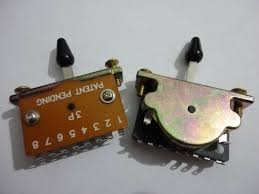

Esta chave seletora de 5 posicoes te possibilita escolher entre usar o captador da ponte, do meio, e do braço, alem de duas posições que combinam o do meio com o do braço, e o do meio com o da ponte, respectivamente